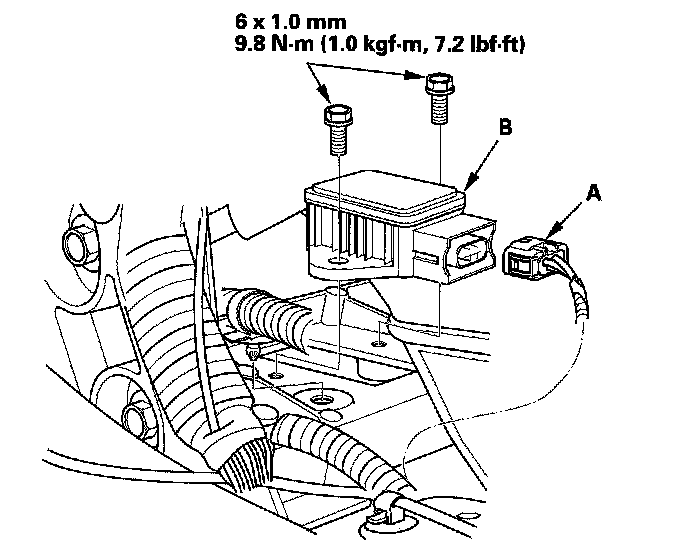

Yaw Rate Sensor: Service and Repair
Yaw Rate-Lateral/Longitudinal Acceleration Sensor ReplacementNOTE:
^ Do not damage or drop the sensor as it is sensitive.
^ Do not use power tools.
1. Turn the ignition switch OFF.
2. Remove the driver's center console trim.
3. Disconnect the yaw rate-lateral/longitudinal acceleration sensor 4P connector (A).

4. Remove the sensor mounting nuts, and remove the yaw rate-lateral/longitudinal acceleration sensor (B).
5. Install in the reverse order of removal.
6. Do the yaw rate-lateral/longitudinal acceleration neutral position memorization.